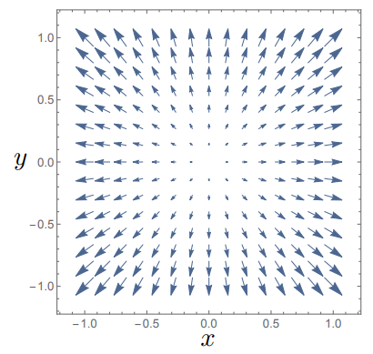

6.1. DivergenceIf we start with a vector field \({\bf A(r)} = A_x({\bf r})\,\mathbf{e_x} + A_y({\bf r})\,\mathbf{e_y} + A_z({\bf r})\,\mathbf{e_z} \) , then we can define the quantity
\(\nabla\cdot {\bf A(r)}\) , i.e. taking the scalar product of the gradient operator with vector field \({\bf A(r)} \) which since the gradient vector is a differential
operator, means the expression has the form:
\[\nabla\cdot {\bf A(r)} = \partial_x\, A_x + \partial_y\, A_y + \partial_z\, A_z\]
This is often known as the Divergence of \({\bf A}\) or \(\text{div}\,{\bf A}\) . Note that in the case of operators we need to be a little careful of the
ordering of the terms, since \({\bf A(r)}\cdot \nabla\) would give:
\[{\bf A(r)} \cdot \nabla= A_x\,\partial_x + A_y\,\partial_y + A_z\,\partial_z \]
which is also a differential operator, waiting to act on another term, which we apply on the right.
Lets see the effect of this on two vector fields \({\bf A_1(r)} = \begin{pmatrix} x \\ y \\ 0\end{pmatrix}, \,{\bf A_2(r)} = \begin{pmatrix} y \\ -x \\ 0\end{pmatrix}\) :
\[\begin{split}\nabla \cdot {\bf A_1} &= \partial_x\, x + \partial_y\, y + \partial_z\, 0 = 2 \\
\nabla \cdot {\bf A_2} &= \partial_x\, y - \partial_y\, x + \partial_z\, 0 = 0 \end{split}\]
which we can visualise in Fig. 6.1

Fig. 6.1 Plotting the vector field \({\bf A_1}\) which has non-zero divergence.
We can see that the origin here really plays the role of a centre of the divergence, the field lines all appear to flow outwards, becuase here \(\nabla \cdot {\bf A} > 0\) . In the case of
\(\nabla \cdot {\bf A} < 0\) , field lines would flow into a point and there would be a convergence of the field.
6.1.1. Cylindrical coordinate systemIn cylindrical polar coordinates, we have the additional complication that the unit vectors:
\[\begin{split} \mathbf{e_R} = \begin{pmatrix}
\cos(\theta) \\
\sin(\theta) \\
0
\end{pmatrix}, \qquad \mathbf{e_\theta } = \begin{pmatrix}
-\sin(\theta) \\
\cos(\theta)\\
0
\end{pmatrix}, \qquad \mathbf{e_z} =
\begin{pmatrix}
0 \\
0\\
1\end{pmatrix} \\\end{split}\]
are now not all constant, so in fact when we apply the derivative operator, we need to do any derivatives ahead of the dot product:
\[\begin{split}\nabla \cdot {\bf A} &= \left(\mathbf{e_R}\, \frac{\partial }{\partial R} + \frac{\mathbf{e_\theta }}{R}\,\frac{\partial }{\partial \theta} + \mathbf{e_z} \,\frac{\partial }{\partial z} \right) \cdot \left( A_R\,\mathbf{e_R} + A_\theta\,\mathbf{e_\theta} + A_z\,\mathbf{e_z}\right) \\
&=\mathbf{e_R}\cdot \left(\frac{\partial (A_R\,\mathbf{e_R})}{\partial R} + \frac{\partial (A_\theta\,\mathbf{e_\theta})}{\partial R} + \frac{\partial (A_z\,\mathbf{e_z})}{\partial R} \right) \\
&+ \frac{\mathbf{e_\theta}}{R}\cdot\left(\frac{\partial (A_R\,\mathbf{e_R})}{\partial \theta} + \frac{\partial (A_\theta\,\mathbf{e_\theta})}{\partial \theta} + \frac{\partial (A_z\,\mathbf{e_z})}{\partial \theta} \right) \\
&+ \mathbf{e_z}\cdot \left(\frac{\partial (A_R\,\mathbf{e_R})}{\partial z} + \frac{\partial (A_\theta\,\mathbf{e_\theta})}{\partial z} +\frac{\partial (A_z\,\mathbf{e_z})}{\partial z} \right) \end{split}\]
So whereas the first and third sets of terms here will not have additional terms, the middle set of terms will be more complicated, because \(\mathbf{e_R} = \mathbf{e_R} (\theta), \, \mathbf{e_\theta} = \mathbf{e_\theta} (\theta)\) .
We find that:
\[\begin{split}\frac{\partial \mathbf{e_R}}{\partial \theta} = \begin{pmatrix} -\sin(\theta) \\ \cos(\theta)\end{pmatrix} = \mathbf{e_\theta},
\qquad \frac{\partial \mathbf{e_\theta}}{\partial \theta} = \begin{pmatrix} -\cos(\theta) \\ -\sin(\theta)\end{pmatrix} = - \mathbf{e_R}\end{split}\]
which means that:
\[\begin{split}\nabla \cdot {\bf A} &= \mathbf{e_R}\cdot \left(\frac{\partial (A_R)}{\partial R}\,\mathbf{e_R} + \frac{\partial (A_\theta)}{\partial R} \,\mathbf{e_\theta} + \frac{\partial (A_z)}{\partial R} \,\mathbf{e_z}\right)
\\ &+ \frac{\mathbf{e_\theta}}{R}\cdot\left(\frac{\partial (A_R)}{\partial \theta}\,\mathbf{e_R} + A_R \,\mathbf{e_\theta} + \frac{\partial (A_\theta)}{\partial \theta}\,\mathbf{e_\theta} - A_\theta\,\mathbf{e_R} + \frac{\partial (A_z)}{\partial \theta} \,\mathbf{e_z} \right)
\\ &+ \mathbf{e_z}\cdot \left(\frac{\partial (A_r)}{\partial z}\,\mathbf{e_r} + \frac{\partial (A_\theta)}{\partial z}\,\mathbf{e_\theta} +\frac{\partial (A_z)}{\partial z} \,\mathbf{e_z} \right) \\
&= \frac{\partial (A_R)}{\partial R} + \frac{1}{R}\frac{\partial (A_\theta)}{\partial \theta} + \frac{A_r}{R} + \frac{\partial (A_z)}{\partial z} \\
\Rightarrow \nabla \cdot {\bf A}&= \frac{1}{R}\frac{\partial (R\,A_R)}{\partial R} + \frac{1}{R}\frac{\partial (A_\theta)}{\partial \theta} + \frac{\partial (A_z)}{\partial z}\end{split}\]
If we consider a vector in cylindrical coordinates, a vector with constant coefficients, e.g. \(\displaystyle {\bf A} = \begin{pmatrix} a\\b\\c \end{pmatrix}\) will have non-zero divergence if
and only if the \(A_R \neq 0\) , since:
\[\nabla \cdot {\bf A} = \frac{1}{R}\frac{\partial (R\,a)}{\partial R} + \frac{1}{R}\frac{\partial b}{\partial \theta} + \frac{\partial c}{\partial z} = \frac{a}{R}\]
6.1.2. Spherical coordinate systemIn spherical polar coordinates, we also have the additional complication that the unit vectors:
\[\begin{split} \mathbf{e_r} = \begin{pmatrix}
\cos(\theta)\,\sin(\phi) \\
\sin(\theta)\,\sin(\phi) \\
\cos(\phi)
\end{pmatrix}, \qquad \mathbf{e_\phi } = \begin{pmatrix}
\cos(\theta)\,\cos(\phi) \\
\sin(\theta)\,\cos(\phi) \\
-\sin(\phi)
\end{pmatrix}, \qquad \mathbf{e_\theta} =
\begin{pmatrix}
-\sin(\theta) \\
\cos(\theta)\\
0
\end{pmatrix} \\\end{split}\]
are now not all constant, so we need to do any derivatives ahead of the dot product:
\[\begin{split}\nabla \cdot {\bf A} &= \left(\mathbf{e_r}\, \frac{\partial }{\partial r}
+ \frac{\mathbf{e_\phi }}{r}\,\frac{\partial }{\partial \phi}
+ \frac{\mathbf{e_\theta}}{r\sin(\phi)} \,\frac{\partial }{\partial \theta}
\right) \cdot \left( A_r\,\mathbf{e_r} + A_\phi\,\mathbf{e_\phi} + A_\theta\,\mathbf{e_\theta}\right) \\
&=\mathbf{e_r}\cdot \left(\frac{\partial (A_r\,\mathbf{e_r})}{\partial r} + \frac{\partial (A_\phi\,\mathbf{e_\phi})}{\partial r} + \frac{\partial (A_\theta\,\mathbf{e_\theta})}{\partial r} \right)
\\ &+ \frac{\mathbf{e_\phi}}{r}\cdot\left(\frac{\partial (A_r\,\mathbf{e_r})}{\partial \phi} + \frac{\partial (A_\phi\,\mathbf{e_\phi})}{\partial \phi} + \frac{\partial (A_\theta\,\mathbf{e_\theta})}{\partial \phi} \right)
\\ &+ \frac{\mathbf{e_\theta}}{r\,\sin(\phi)}\cdot \left(\frac{\partial (A_r\,\mathbf{e_r})}{\partial \theta} + \frac{\partial (A_\phi\,\mathbf{e_\phi})}{\partial \theta} +\frac{\partial (A_\theta\,\mathbf{e_\theta})}{\partial \theta} \right) \end{split}\]
So whereas the first set of terms here will not have additional terms, the second and third set of terms will be more complicated, because \(\mathbf{e_r} = \mathbf{e_r} (\phi,\, \theta), \, \mathbf{e_\phi} = \mathbf{e_\phi}(\phi,\,\theta),\, \mathbf{e_\theta} = \mathbf{e_\theta} (\phi,\,\theta)\) .
We find that:
\[\begin{split}\frac{\partial \mathbf{e_r}}{\partial \phi} &= \begin{pmatrix}
\cos(\theta)\,\cos(\phi) \\
\sin(\theta)\,\cos(\phi) \\
-\sin(\phi)
\end{pmatrix} = \mathbf{e_\phi},
\qquad
\frac{\partial \mathbf{e_\phi}}{\partial \phi} = \begin{pmatrix}
-\cos(\theta)\,\sin(\phi) \\
-\sin(\theta)\,\sin(\phi) \\
-\cos(\phi)
\end{pmatrix} = - \mathbf{e_r},
\qquad
\frac{\partial \mathbf{e_\theta}}{\partial \phi} = \begin{pmatrix}
0 \\
0 \\
0
\end{pmatrix}
\\
\frac{\partial \mathbf{e_r}}{\partial \theta} &= \begin{pmatrix}
-\sin(\theta)\,\sin(\phi) \\
\cos(\theta)\,\sin(\phi)\\
0
\end{pmatrix} = \sin(\phi)\,\mathbf{e_\theta},
\qquad
\frac{\partial \mathbf{e_\phi}}{\partial \theta} = \begin{pmatrix}
-\sin(\theta)\,\cos(\phi) \\
\cos(\theta)\,\cos(\phi)\\
0
\end{pmatrix} = \cos(\phi)\,\mathbf{e_\theta},\\
\frac{\partial \mathbf{e_\theta}}{\partial \theta} &= \begin{pmatrix}
-\cos(\theta) \\
-\sin(\theta) \\
0
\end{pmatrix} = - (\sin(\phi)\,\mathbf{e_r} + \cos(\phi)\,\mathbf{e_\phi}),\end{split}\]
which means that:
\[\begin{split}\nabla \cdot {\bf A} &= \mathbf{e_r}\cdot \left(\frac{\partial (A_r)}{\partial r}\,\mathbf{e_r} + \frac{\partial (A_\phi)}{\partial r} \,\mathbf{e_\phi} + \frac{\partial (A_\theta)}{\partial r} \,\mathbf{e_\theta}\right)
\\ &+ \frac{\mathbf{e_\phi}}{r}\cdot\left(\frac{\partial (A_r)}{\partial \phi}\,\mathbf{e_r} + A_r \,\mathbf{e_\phi} + \frac{\partial (A_\phi)}{\partial \phi}\,\mathbf{e_\phi} - A_\phi\,\mathbf{e_r} + \frac{\partial (A_\theta)}{\partial \phi} \,\mathbf{e_\theta} \right)
\\ &+ \frac{\mathbf{e_\theta}}{r\,\sin(\phi)}\cdot \left(\frac{\partial (A_r)}{\partial \theta}\,\mathbf{e_r} + A_r\,\sin(\phi)\,\mathbf{e_\theta} + \frac{\partial (A_\phi)}{\partial \theta}\,\mathbf{e_\phi} \right.\\
&\left.\qquad \qquad + A_\phi\,\cos(\theta)\,\mathbf{e_\theta} +\frac{\partial (A_\theta)}{\partial \theta} \,\mathbf{e_\theta} - A_\theta(\mathbf{e_r}\,\sin(\phi) + \mathbf{e_\phi}\,\cos(\phi)) \right) \\
&= \frac{\partial (A_r)}{\partial r} + \frac{A_r}{r} + \frac{2}{r}\frac{\partial (A_\phi)}{\partial \phi} + \frac{A_\phi\,\cos(\phi)}{r\,\sin(\phi)} + \frac{1}{r\,\sin(\phi)}\frac{\partial (A_\theta)}{\partial \theta} \\
\Rightarrow \nabla \cdot {\bf A}&= \frac{1}{r^2}\frac{\partial (r^2\,A_r)}{\partial r} + \frac{1}{r\,\sin(\phi)}\,\frac{\partial (\sin(\phi)\,A_\phi)}{\partial \phi} + \frac{1}{r\,\sin(\phi)}\,\frac{\partial (A_\theta)}{\partial \theta}\end{split}\]
6.2. CurlWe can likewise take a vector field \({\bf A(r)} \) and here take the vector product with the gradient operator \(\nabla\times {\bf A(r)}\) , which has components:
\[\begin{split}\nabla\times {\bf A(r)} =
\begin{vmatrix} \mathbf{e_x} & \mathbf{e_y} & \mathbf{e_z}\\ \frac{\partial}{\partial x} & \frac{\partial}{\partial y} & \frac{\partial}{\partial z} \\ A_x & A_y & A_z\end{vmatrix}
= \begin{pmatrix} \partial_y\, A_z - \partial_z\, A_y \\ \partial_z\, A_x - \partial_x\, A_z \\ \partial_x\, A_y - \partial_y\, A_x \end{pmatrix}\end{split}\]
which is know as the Curl or Rotation of the vector field \(\bf A(r)\) or \(\text{curl}\,{\bf A(r)}\) .
To see the effects of these, lets consider again \({\bf A_1(r)} = \begin{pmatrix} x \\ y \\ 0\end{pmatrix}, \,{\bf A_2(r)} = \begin{pmatrix} y \\ -x \\ 0\end{pmatrix}\) :
\[\begin{split}\nabla \times {\bf A_1} &= \begin{pmatrix} \partial_y\, 0 + \partial_z\, x \\ \partial_z\, y - \partial_x\, 0 \\ \partial_x\, y - \partial_y\, x \end{pmatrix} = \begin{pmatrix} 0 \\ 0 \\ 0 \end{pmatrix} \\
\nabla \times {\bf A_2} &= \begin{pmatrix} \partial_y\, 0 + \partial_z\, x \\ \partial_z\, y - \partial_x\, 0 \\ \partial_x\, x + \partial_y\, y \end{pmatrix} = \begin{pmatrix} 0 \\ 0 \\ 2 \end{pmatrix}\end{split}\]
which we can visualise in Fig. 6.2
Fig. 6.2 Plotting the vector field \({\bf A_2}\) which has non-zero curl.
We note that “centre” of this rotation is at the origin and that \(\nabla \times {\bf A_2}\) points in the \(z\) direction. We define this rotation as following the right
hand rule, depicted in Fig. 6.3
Fig. 6.3 The right hand rule for a curl field
We can see that a linear combination of vector fields \(\bf A_1 + A_2\) would produce a vector field with both divergence and curl, which is shown in Fig. 6.4
Fig. 6.4 The effect of adding a divergence (curl free) field (left hand figure) to a curl (divergence free) field (middle figure) is shown in the right hand figure.
We can use the product rule as well as the rules following scalar and vector products to find a vareity of vector calculus relations:
\[\begin{split}\nabla(\phi\,\psi) &= \psi(\nabla \phi) + \phi(\nabla \psi)\\
\nabla \cdot(\phi {\bf A}) &= (\nabla \phi)\cdot {\bf A} + \phi(\nabla \cdot {\bf A})\\
\nabla \times(\phi {\bf A}) &= (\nabla \phi)\times {\bf A} + \phi(\nabla \times {\bf A})\\
\nabla \cdot ({\bf A \times B}) &= (\nabla \times {\bf A})\cdot {\bf B} - {\bf A}\cdot(\nabla \times {\bf B})\\
\nabla \times ({\bf A \times B}) &= (\nabla \cdot {\bf B} + {\bf B}\cdot \nabla)\,{\bf A} - (\nabla \cdot {\bf A}+ {\bf A}\cdot \nabla)\,{\bf B}\end{split}\]
6.2.1. Cylindrical coordinate systemsAs with the divergence, the variation of the unit vectors causes additional complexity in calculating the curl:
\[\nabla \times {\bf A} = \left(\mathbf{e_R}\, \frac{\partial }{\partial R} + \frac{\mathbf{e_\theta }}{R}\,\frac{\partial }{\partial \theta} + \mathbf{e_z} \,\frac{\partial }{\partial z}
\right) \times \left( A_R\,\mathbf{e_R} + A_\theta\,\mathbf{e_\theta} + A_z\,\mathbf{e_z}\right)\]
which given our expressions for variation of unit vectors with coordinate variables means:
\[\begin{split}\nabla \times {\bf A} &= \mathbf{e_R}\times \left(\frac{\partial (A_R)}{\partial R}\,\mathbf{e_R} + \frac{\partial (A_\theta)}{\partial R} \,\mathbf{e_\theta} + \frac{\partial (A_z)}{\partial R} \,\mathbf{e_z}\right)
\\ &+ \frac{\mathbf{e_\theta}}{R}\times\left(\frac{\partial (A_R)}{\partial \theta}\,\mathbf{e_R} + A_R \,\mathbf{e_\theta} + \frac{\partial (A_\theta)}{\partial \theta}\,\mathbf{e_\theta} - A_\theta\,\mathbf{e_R} + \frac{\partial (A_z)}{\partial \theta} \,\mathbf{e_z} \right)
\\ &+ \mathbf{e_z}\times \left(\frac{\partial (A_R)}{\partial z}\,\mathbf{e_R} + \frac{\partial (A_\theta)}{\partial z}\,\mathbf{e_\theta} +\frac{\partial (A_z)}{\partial z} \,\mathbf{e_z} \right) \\\end{split}\]
Given the cylic nature of unit vectors and their orthongality:
\[\begin{split}\mathbf{e_R} \times \mathbf{e_\theta} &= \mathbf{e_z}\\
\mathbf{e_\theta} \times \mathbf{e_z} &= \mathbf{e_R}\\
\mathbf{e_z} \times \mathbf{e_R} &= \mathbf{e_\theta}\\
\mathbf{e_r} \times \mathbf{e_R} &= \mathbf{e_\theta} \times \mathbf{e_\theta} = \mathbf{e_z} \times \mathbf{e_z} = 0\end{split}\]
means we find that:
\[\begin{split}\nabla \times {\bf A} &= \left(\frac{\partial (A_\theta)}{\partial R} \,\mathbf{e_z} - \frac{\partial (A_z)}{\partial R} \,\mathbf{e_\theta}\right)
+ \left(-\frac{1}{R}\frac{\partial (A_R)}{\partial \theta}\,\mathbf{e_z} + \frac{A_\theta}{R}\,\mathbf{e_z} + \frac{1}{R}\frac{\partial (A_z)}{\partial \theta} \,\mathbf{e_r} \right) \\
&+ \left(\frac{\partial (A_R)}{\partial z}\,\mathbf{e_\theta} - \frac{\partial (A_\theta)}{\partial z}\,\mathbf{e_R}\right)\\
\Rightarrow \nabla \times {\bf A}&= \left(\frac{1}{R}\,\frac{\partial A_z}{\partial \theta} - \frac{\partial A_\theta}{\partial z} \right)\,\mathbf{e_R} + \left(\frac{\partial A_R}{\partial z} - \frac{\partial A_z}{\partial R}\right)\,\mathbf{e_\theta} + \frac{1}{R}\left(\frac{\partial (R\,A_\theta)}{\partial R}-\frac{\partial A_R}{\partial \theta}\right)\,\mathbf{e_z}\end{split}\]
6.2.2. Spherical coordinate systemsIn a similar fashion to the cylindrical polar coordinates, we need to consider how the unit vectors change under differentiation first before
applying the cross product, therefore:
\[\begin{split}\nabla \times {\bf A} &= \left(\mathbf{e_r}\, \frac{\partial }{\partial r}
+ \frac{\mathbf{e_\phi }}{r}\,\frac{\partial }{\partial \phi}
+ \frac{\mathbf{e_\theta}}{r\sin(\phi)} \,\frac{\partial }{\partial \theta}
\right) \times \left( A_r\,\mathbf{e_r} + A_\phi\,\mathbf{e_\phi} + A_\theta\,\mathbf{e_\theta}\right) \\
&=\mathbf{e_r}\times \left(\frac{\partial (A_r)}{\partial r}\,\mathbf{e_r} + \frac{\partial (A_\phi)}{\partial r} \,\mathbf{e_\phi} + \frac{\partial (A_\theta)}{\partial r} \,\mathbf{e_\theta}\right)
\\ &+ \frac{\mathbf{e_\phi}}{r}\times\left(\frac{\partial (A_r)}{\partial \phi}\,\mathbf{e_r} + A_r \,\mathbf{e_\phi} + \frac{\partial (A_\phi)}{\partial \phi}\,\mathbf{e_\phi} - A_\phi\,\mathbf{e_r} + \frac{\partial (A_\theta)}{\partial \phi} \,\mathbf{e_\theta} \right)
\\ &+ \frac{\mathbf{e_\theta}}{r\,\sin(\phi)}\times \left(\frac{\partial (A_r)}{\partial \theta}\,\mathbf{e_r} + A_r\,\sin(\phi)\,\mathbf{e_\theta} + \frac{\partial (A_\phi)}{\partial \theta}\,\mathbf{e_\phi} \right.\\
&\left.\qquad \qquad + A_\phi\,\cos(\theta)\,\mathbf{e_\theta} +\frac{\partial (A_\theta)}{\partial \theta} \,\mathbf{e_\theta} - A_\theta(\mathbf{e_r}\,\sin(\phi) + \mathbf{e_\phi}\,\cos(\phi)) \right) \end{split}\]
Given the cylic nature of unit vectors and their orthongality:
\[\begin{split}\mathbf{e_r} \times \mathbf{e_\phi} &= \mathbf{e_\theta}\\
\mathbf{e_\phi} \times \mathbf{e_\theta} &= \mathbf{e_r}\\
\mathbf{e_\theta} \times \mathbf{e_r} &= \mathbf{e_\phi}\\
\mathbf{e_r} \times \mathbf{e_r} &= \mathbf{e_\phi} \times \mathbf{e_\phi} = \mathbf{e_\theta} \times \mathbf{e_\theta} = 0\end{split}\]
means we find that:
\[\begin{split}\nabla \times {\bf A} &= \left(\frac{\partial (A_\phi)}{\partial r} \,\mathbf{e_\theta} - \frac{\partial (A_\theta)}{\partial r} \,\mathbf{e_\phi}\right)
+ \left(-\frac{1}{r}\frac{\partial (A_r)}{\partial \phi}\,\mathbf{e_\theta} + \frac{A_\phi}{r}\,\mathbf{e_\theta}
+ \frac{1}{r}\frac{\partial (A_\theta)}{\partial \phi} \,\mathbf{e_r} \right) \\
&+ \left(\frac{1}{r\,\sin(\phi)}\frac{\partial (A_r)}{\partial \theta}\,\mathbf{e_\phi} - \frac{1}{r\,\sin(\phi)}\frac{\partial (A_\phi)}{\partial \theta}\,\mathbf{e_r} - \frac{A_\theta}{r}\,\mathbf{e_\phi}
+ \frac{A_\theta\,\cos(\phi)}{r\,\sin(\phi)}\,\mathbf{e_r}\right)\\
\Rightarrow \nabla \times {\bf A}&= \frac{1}{r\,\sin(\phi)}\left(\frac{\partial (A_\theta\,\sin(\phi))}{\partial \phi} - \frac{\partial A_\phi}{\partial \theta} \right)\,\mathbf{e_r}
\\&+ \frac{1}{r}\left(\frac{1}{\sin(\phi)}\frac{\partial A_r}{\partial \theta} - \frac{\partial (r\,A_\theta)}{\partial r}\right)\,\mathbf{e_\phi}
\\&+ \frac{1}{r}\left(\frac{\partial (r\,A_\phi)}{\partial r}-\frac{\partial A_r}{\partial \phi}\right)\,\mathbf{e_\theta}\end{split}\]
6.3. Second order variations of fieldsWe can combine two or more gradients in a vector expression, one of the most useful is to find the divergence of the gradient of a scalar field \(\phi\) ,
\[\textrm{div grad} \,\phi = \nabla \cdot (\nabla \phi) = \nabla^2 \phi = \left(\frac{\partial}{\partial_x^2} + \frac{\partial}{\partial_y^2} + \frac{\partial}{\partial_z^2}\right)\phi\]
This is sometimes also written as \(\Delta\phi = \nabla^2 \phi \) and is known as the Laplacian of \(\phi\) .
We can also find the divergence of the curl of a vector field:
\[\text{div}\,\,\text{curl}\,{\bf A} = \nabla \cdot (\nabla \times {\bf A}) = 0\]
which holds for all vector fields. Thinking again about the fields shown in Fig. 6.4
Likewise if we look at the curl of a gradient field:
\[\text{curl}\,\,\text{grad}\,\phi = \nabla \times \nabla \phi = 0\]
which is true for all scalar fields.
Also we sometimes find the curl of the curl a useful quantity:
\[\nabla \times \left(\nabla \times {\bf A}\right) = \nabla \left(\nabla \cdot {\bf A} \right) - \nabla^2 {\bf A}\]
In general we can write a vector field as having two sets of components, one curl free and one divergence free, this is known as the Helmholtz Decomposition of a vector field:
\[{\bf B} = -\nabla \phi + \nabla \times {\bf A}\]
6.4. Conservative vector fieldsRecall the concept of a perfect (or exact) differential where the following property holds:
\[P(x,\,y)\,\mathrm{d}x + Q(x,\,y)\,\mathrm{d}y = 0 \Longleftrightarrow \frac{\partial P}{\partial y} = \frac{\partial Q}{\partial x} \]
where this holds because there is some function \(f(x,\,y)\) which is constant such that \(\mathrm{d}f = 0\) and so this expression
is really just:
\[\mathrm{d}f = \frac{\partial f}{\partial x}\,\mathrm{d}x + \frac{\partial f}{\partial y}\,\mathrm{d}y = 0\]
and the expression calculated is just:
\[\frac{\partial P}{\partial y} = \frac{\partial Q}{\partial x} = \frac{\partial^2 f}{\partial x\,\partial y}\]
There is a vector calculus generalisation of this sort of scalar function, known as the conservative vector field .
Definition
A conservative vector field \({\bf v}\) is one which is formed solely from the gradient of some function \(f(x,\,y,\,z)\) :
\[{\bf v} = \nabla f\]
Such a vector field is therefore curl free:
\[\nabla \times {\bf v} = \nabla \times \nabla f = 0\]
Such a vector field also has a path independent line integral (more on this property later).
Lets examine the case of a vector field \(\bf v\) formed from the function \(f(x,\,y,\,z) = xyz\) , the gradient of this function is given by:
\[\begin{split}{\bf v} = \nabla f = \begin{pmatrix} yz \\ xz \\ xy \end{pmatrix}\end{split}\]
and if we take the curl of such a vector field:
\[\begin{split}\nabla \times {\bf v} &= \begin{vmatrix} \mathbf{e_x} & \mathbf{e_y} & \mathbf{e_z} \\ \partial_x & \partial_y & \partial_z \\ yz & xz & xy\end{vmatrix} \\
&= (x - x)\,\mathbf{e_x} + (y - y)\,\mathbf{e_y} + (z - z)\,\mathbf{e_z} = 0\end{split}\]
Likewise if we started with some vector field and wanted to work out if it is conservative (and if so which scalar field sourced it), we could examine
each component and integrate, for instance if:
\[\begin{split}{\bf v} = \begin{pmatrix} 2x\sin(y) \\ x^2\cos(y) \\ 2 \end{pmatrix}\end{split}\]
then examining each component we find:
\[\begin{split}v_x = 2x\sin(y) &\Rightarrow \phi = \int 2x\sin(y)\,\mathrm{d}x = x^2\sin(y) + a(y,\,z) \\
v_y = x^2\cos(y) &\Rightarrow \phi = \int 2x\sin(y)\,\mathrm{d}x = x^2\sin(y) + b(x,\,z) \\
v_z = 2 &\Rightarrow \phi = \int 2\,\mathrm{d}z = 2z + c(x,\,y) \end{split}\]
Comparing all three expressions we find that \(f = x^2\sin(y) + 2z\) and hence \({\bf v} = \nabla f\) .